Chat that shows the work
See what a bot is doing right now, how long it has been at it, and each step it took. Finished turns fold into a "Worked for 1m 14s · 2 steps" chip.
Self-hosted · MIT · Experimental
A team of AI agents you chat with, each with its own screen on its own computer. Hermes Agent runs the bots, a Docker desktop gives each one a screen, Composio connects their apps, and local STT/TTS, a GPU with a talking avatar, or xAI gives them a voice.
Download
The installer sets up what Orbit needs on first run: Hermes Agent, plus Docker Desktop, or on a Mac with the native stack, Apple's container runtime. On Windows and Linux with an NVIDIA GPU, GPU voice with the talking avatar installs later from a bot's voice settings, only when you ask. The install guide walks through each screen.
What you get
Each bot has a name, a look, its own memory, a Hermes engine, and a Docker desktop you can watch or take over. It can run on the model subscriptions you already pay for or on API keys.
See what a bot is doing right now, how long it has been at it, and each step it took. Finished turns fold into a "Worked for 1m 14s · 2 steps" chip.
Every bot gets its own Docker desktop with Xvfb, Chrome and a VNC relay. Watch it live, open it full size, or take control.
Name it, pick a shape and colour, choose personal or teammate. It gets a Hermes home, an engine, a screen and its own memory.
A message dispatches the bots it @mentions. A bot can @mention a peer and Orbit dispatches that peer one hop deeper.
One-time events at a date and time, or recurring ones on a cron preset or custom expression. The assigned bot runs the prompt when it fires.
Talk to a bot from the composer. On-device STT/TTS when the models are present, cloud voice when not; the spoken turn lands in the transcript.
On Windows and Linux with an NVIDIA GPU, one Install in the voice settings runs speech recognition, 38 voices and a lip-synced portrait on your GPU. Answers are spoken a sentence at a time while the model is still writing.
Bots work in your Google apps through Composio. Emails arrive as drafts you edit and send; event changes, sheet edits and doc edits wait on a card that shows exactly what will change, and you can edit it before you allow it. Always allow, per bot, when you trust it.
Google events sync into the Orbit calendar, encrypted at rest, next to your bots' events. Create, move or delete them from Orbit, or duplicate one as an Orbit event so a bot prepares you for it; it follows the meeting when it moves.
Write a SKILL.md in the app, install one from a GitHub repository, or let a bot write one for the team. Every bot can use it by typing /name; turn it off for any bot that should not have it. A GitHub skill keeps the exact commit it came from.
An Expo client for iOS and Android: chats, threads, calendar, files, computers and a live VNC viewer. Review cards and Google Calendar work on the phone too.
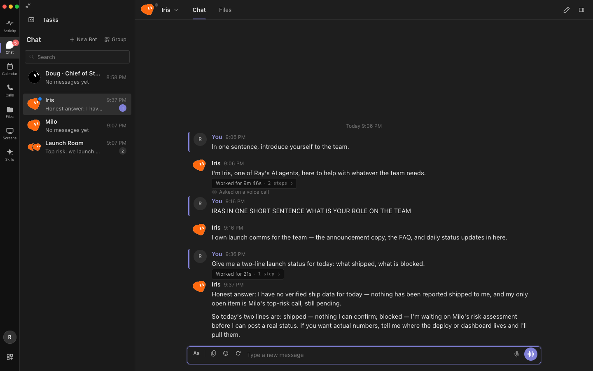
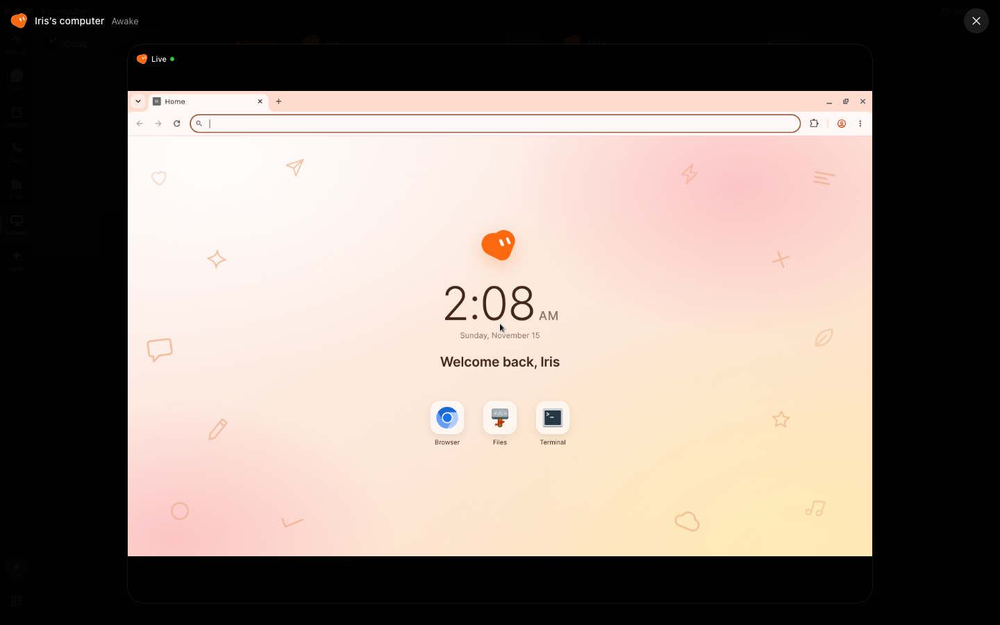
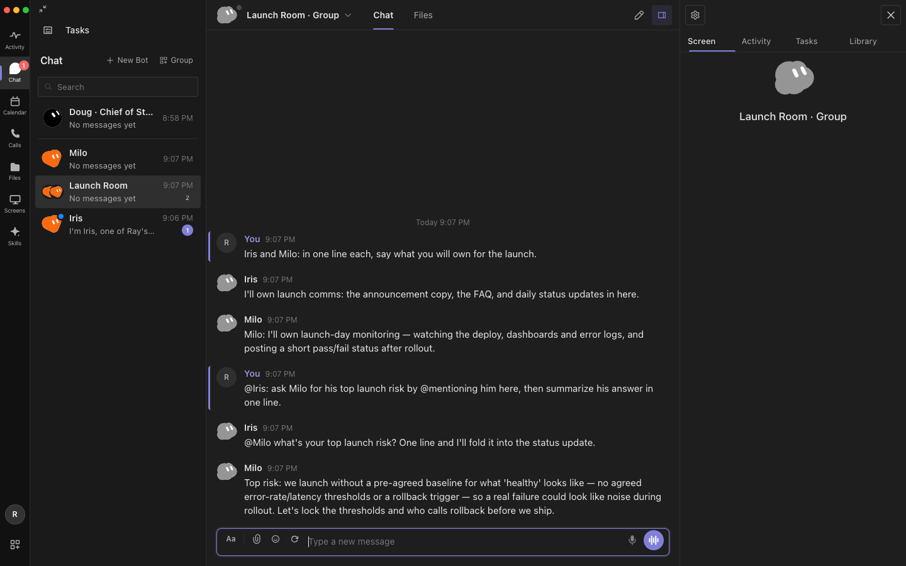
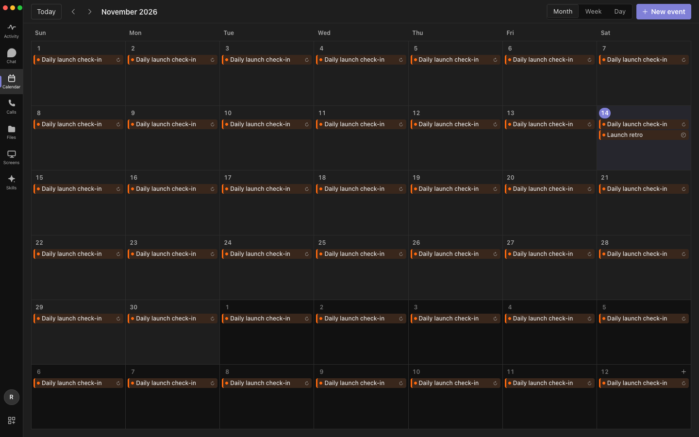
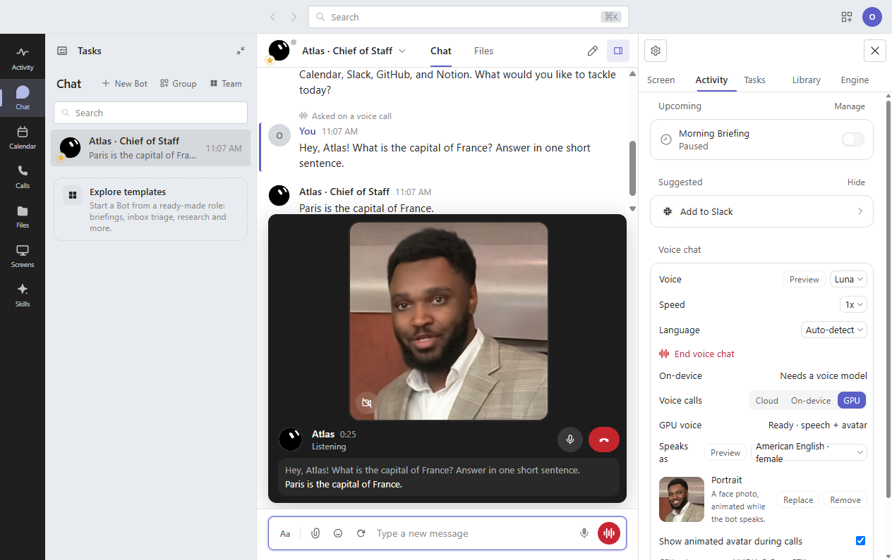
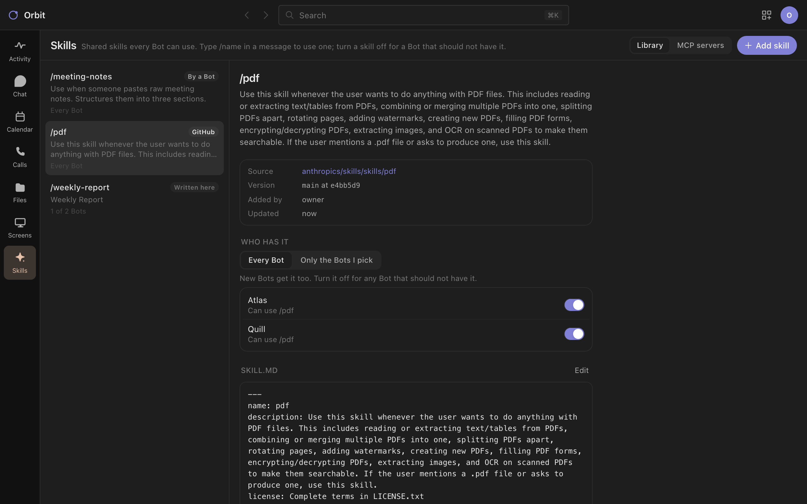
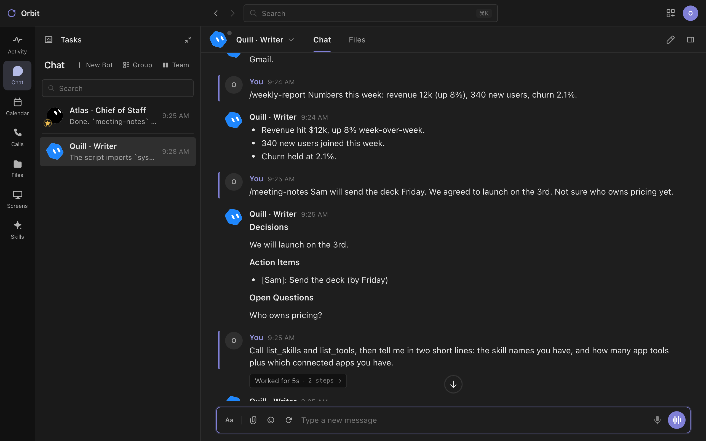
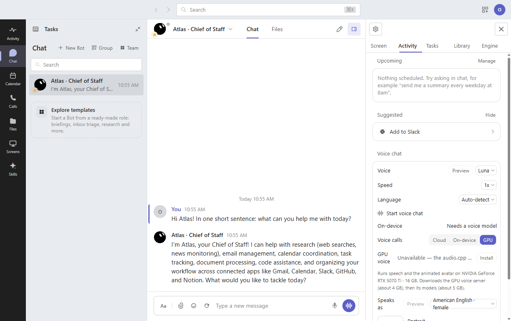
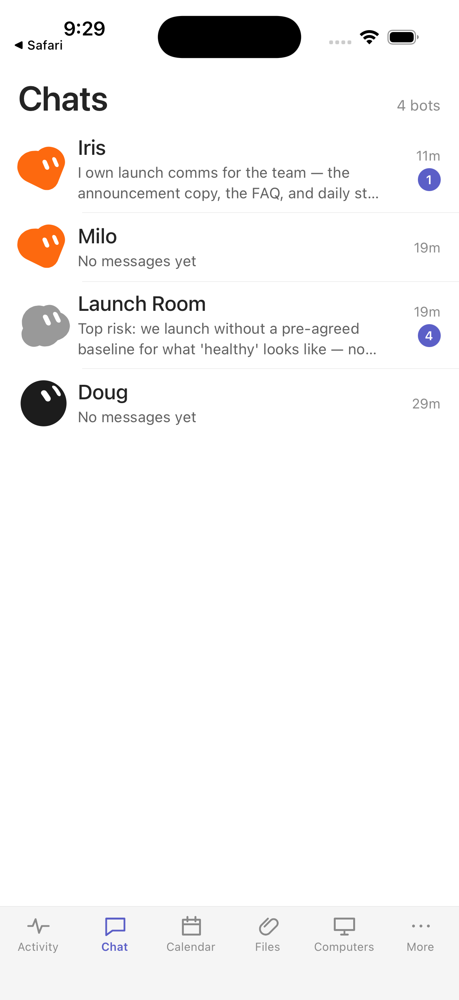
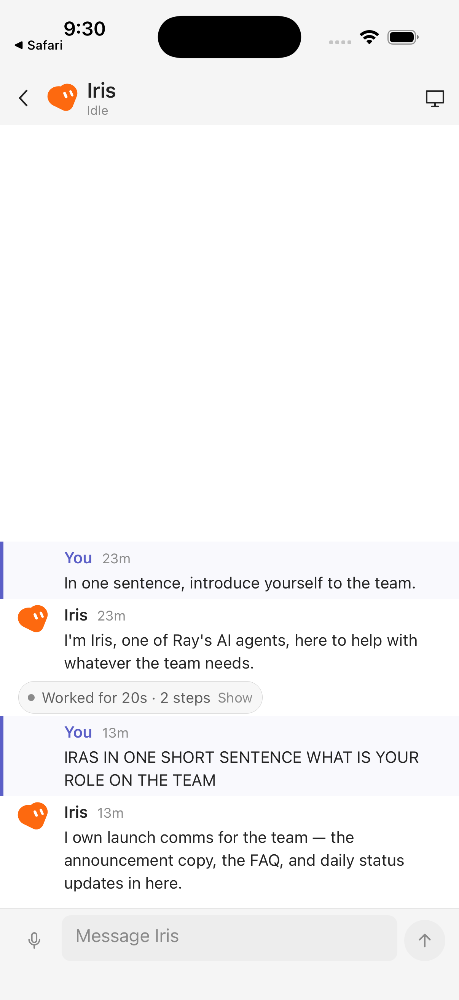
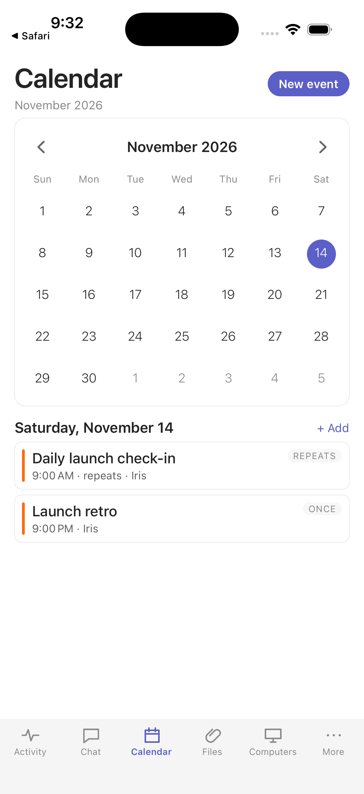
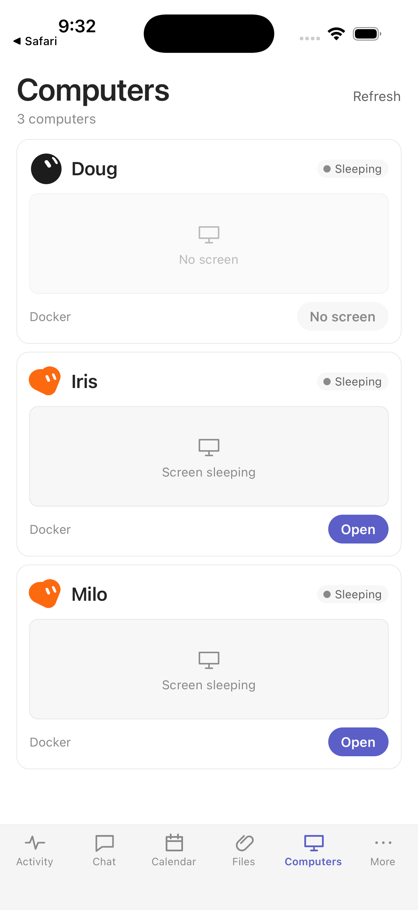
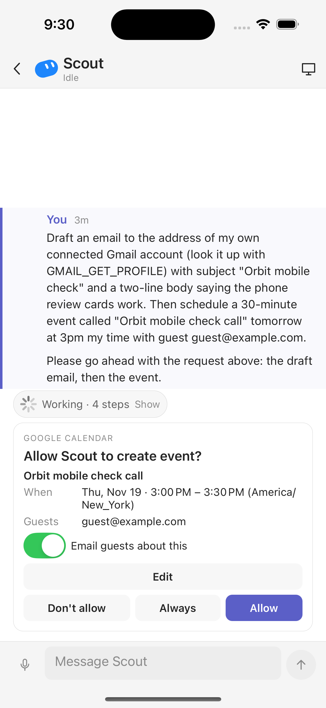

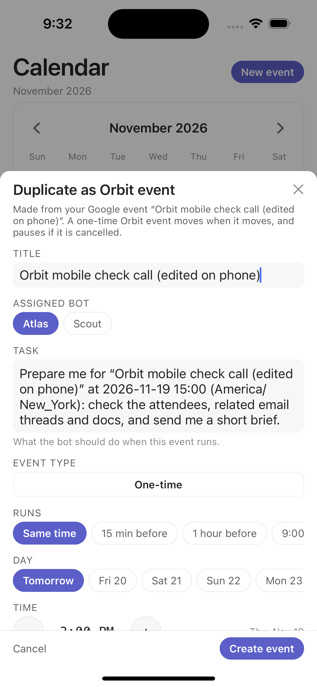
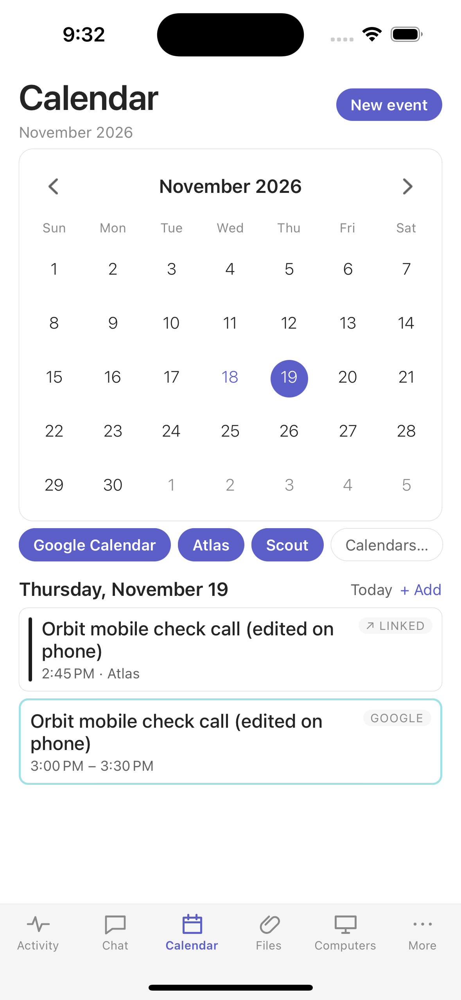
How it fits together
Get started
Needs Node.js 22+, pnpm 12, and Docker for the per-bot desktops. The setup guide covers macOS, Linux, Windows, choosing the agent's model, GPU voice, building the installers, the mobile app and remote installs; the API reference lists every route.
git clone https://github.com/raybello/orbit.git
cd orbit
pnpm install
cp .env.example .env # fill in the keys
pnpm build
docker compose -f infra/compose/docker-compose.yml up --build
open http://127.0.0.1:8787Experimental, with no security audit. Bots share a Docker host and can reach each other's files through their containers. Approval cards cover Composio write actions; what a bot does in its browser or shell is not gated. The default ceiling is four bots, since each desktop takes roughly 1 to 2 GB of RAM.